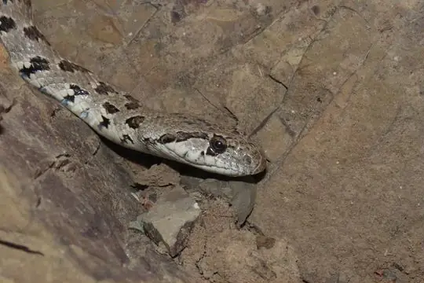
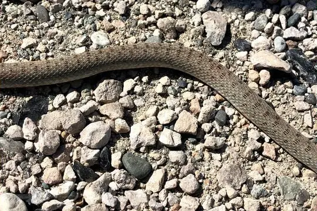
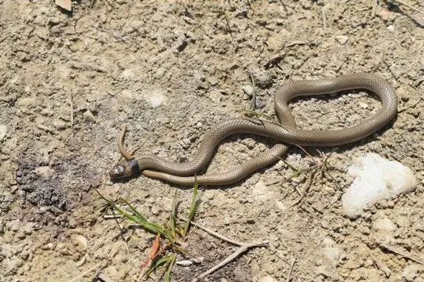
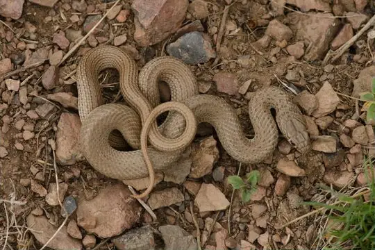
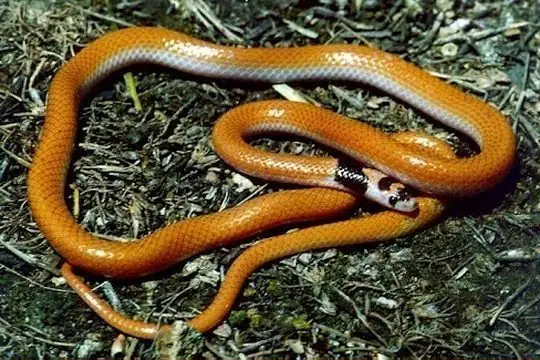

Snakes around Yerevan
Yerevan, Armenia · 40.18°N, 44.51°E
Yerevan is a city in Yerevan, Armenia. 7 snake species are recorded in Yerevan in SnakeList.
- 7species
- 7non-venomous
- 2families
These are the snakes of Yerevan, not of Yerevan itself. SnakeList records snakes by state or province, not by city, so this page lists the 7 species recorded anywhere in Yerevan, the state or province Yerevan is in (worked out from the city’s map position). Many of them may not live in or near the city.
Most widely recorded
The species here that have research-grade iNaturalist records in the most places across their whole range - not just in Yerevan. That shows how often people have photographed them, not how many live here.
 Sand Boa (jaculus)Eryx jaculus
Sand Boa (jaculus)Eryx jaculus Asian RacerHemorrhois nummifer
Asian RacerHemorrhois nummifer
Spotted Whip SnakeHemorrhois ravergieri
Red-Bellied RacerDolichophis schmidti
Collared Dwarf SnakeEirenis collaris
Dotted Dwarf SnakeEirenis punctatolineatus
Palestine Kukri SnakeRhynchocalamus satunini
Venomous and non-venomous
Venomous: 0Non-venomous: 7
Snake families
Habitats (rough estimate)
How many of its living snakes have each kind of habitat in SnakeList’s estimate. That estimate comes from every country, state and province where each snake is recorded - not from a survey of Yerevan, and not checked species by species.
Who described them
The scientists who first described its most widely recorded snakes, and when.
- Sand Boa (jaculus) Eryx jaculus -
- Asian Racer Hemorrhois nummifer -
- Spotted Whip Snake Hemorrhois ravergieri -
- Red-Bellied Racer Dolichophis schmidti -
- Collared Dwarf Snake Eirenis collaris -
- Dotted Dwarf Snake Eirenis punctatolineatus -
- Palestine Kukri Snake Rhynchocalamus satunini -
Names and dates come from SnakeList’s reviewed species accounts; the others are looked up on Wikidata (CC0) when this page opens.
Nearby cities
The closest cities in SnakeList’s city list, as the crow flies.
- Ganja 166 km · Ganja-Gazakh Economic Region, Azerbaijan
- Tbilisi 170 km · Tbilisi, Georgia
- Van 211 km · Van, Turkey
- Tabriz 279 km · East Azerbaijan, Iran
- Orūmīyeh 296 km · East Azerbaijan, Iran
- Vladikavkaz 318 km · Republic of North Ossetia-Alania, Russia
- Groznyy 362 km · Chechen Republic, Russia
- Nal’chik 376 km · Kabardino-Balkaria, Russia
All 7 species of Yerevan
- Asian Racer Hemorrhois nummifer
- Collared Dwarf Snake Eirenis collaris
- Dotted Dwarf Snake Eirenis punctatolineatus
- Palestine Kukri Snake Rhynchocalamus satunini
- Red-Bellied Racer Dolichophis schmidti
- Sand Boa (jaculus) Eryx jaculus
- Spotted Whip Snake Hemorrhois ravergieri
No snake here matches that.